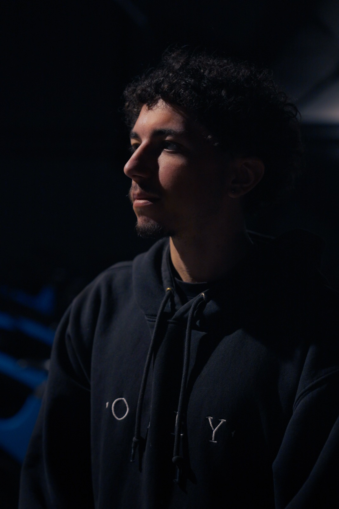

À propos
Anthony
Da Costa
Créatif visuel : je conçois des images qui racontent — du film à la 3D, de l'identité au contenu social.
Mon travail navigue entre plusieurs disciplines : réalisation et captation vidéo, direction artistique, design et rendu 3D, illustration et contenu pour les réseaux. Ce qui les relie, c'est une même obsession — la lumière, le rythme et le détail juste.
J'aime les projets que je peux porter de bout en bout : penser le concept, tourner, monter, designer, livrer. Caméra à la main, je cherche une image cinématographique, sobre et chaude — et une idée qui tient.
Aujourd'hui, j'accompagne marques et indépendants pour donner forme à leurs projets : un film, une pochette, une identité, une série de posts.
Basé à
Aix · France
Disciplines
Film · 3D · DA · Contenu
Boîte à outils
Sony · Adobe · Cinema 4D